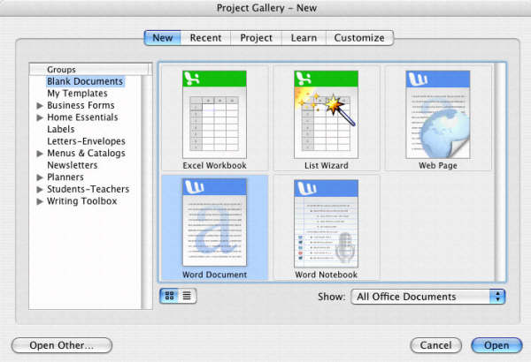
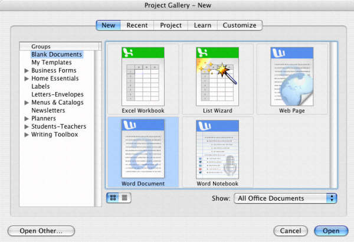

咬一口苹果
10/25/2005 10:14:27 AM

已经完全适应Mac的工作模式了，现在基本上可以在Mac上工作和生活。
Photoshop、Dreamweaver、Flash、MSN、iQQ、Office等各种常用软件都乖乖工作。
还体验了Apple 的 iWork与iLife，感觉Mac的软件十分精彩。
惊讶于Mac极致的人性化设计与近乎完美的美工界面。
最令笔者惊讶的是，笔者的两个智能手机N-Gage和SX1都可以通过蓝牙被Mac正确识别，电脑中显示两个手机的样子，然后传输一个叫做iSync的软件到手机。
通过iSync可以通过蓝牙让手机的联系人和日程安排轻松与电脑同步，甚至连手机里联系人的来电头像都被同步到Mac的Address Book了，智能得让人觉得特体贴。
Mac兼容Windows的网络十分理想，不需要什么设置就可以与Windows的机器共享文件，通过学校的虚拟拨号服务器进行PPPoE宽带连接也十分稳定。
大家看看我的截图感受一下吧，我的硬件环境是P4506(2.66G with EX64)/512DDR双通道/120GSATA+20GPATA/ATI-PCIE，这样的配置运行Mac已经相当快了。
我现在正在研究里面的x-code，想为这个漂亮的系统写个软件。
对于Mac有任何疑问的可以与我联系呀，大家一起探索，呵呵。


 
